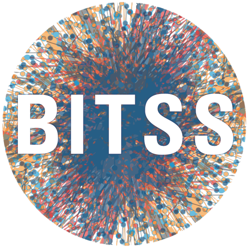

![]()
This work was completed using the following R packages: datawizard v. 1.3.1 (Patil et al., 2022), downlit v. 0.4.5 (Wickham, 2025), grateful v. 0.3.0 (Rodriguez-Sanchez & Jackson, 2025), palmerpenguins v. 0.1.1 (Horst et al., 2020), renv v. 1.0.7 (Ushey & Wickham, 2024), rmarkdown v. 2.31 (Allaire et al., 2026; Xie et al., 2018, 2020), sessioninfo v. 1.2.4 (Wickham et al., 2026), tidyverse v. 2.0.0 (Wickham et al., 2019), withr v. 3.0.3 (Hester et al., 2026).
About
Contributors
This site was authored by Florian Kohrt, Josephine Zerna, Christoph Scheffel, Felix Schönbrodt, and Pat Callahan.
This tutorial was created by Florian Kohrt. It is based on previous work by Josephine Zerna and Christoph Scheffel. Comments on earlier versions were kindly provided by Malika Ihle, Florian Pargent, Jonas Hagenberg, Felix Schönbrodt, and Sarah von Grebmer zu Wolfsthurn. Felix Schönbrodt created this short version of the longer original tutorial.
License and Disclaimer
None of the discussion in this tutorial constitutes legal advice.
Except where noted otherwise, the narrative text in this tutorial is licensed under CC BY-SA 4.0; the code without any narrative text is also (at your option) available under CC0 1.0.
The files Manuscript.qmd and Bibliography.bib are made available by Josephine Zerna and Christoph Scheffel under CC0 1.0.
The screenshots of the RStudio IDE are Copyright (C) 2024 Posit PBC and are available under the GNU Affero General Public License v3. The source code is available on GitHub.
Notes
This tutorial was primarily written in 2025 using R and Quarto. Major changes to either can be found at the websites linked above, for the most up-to-date information, and to confirm that our tutorial is not out-of-date.
Utilized Software
Quarto 1.11.9 was utilized to render the files.
sessioninfo::session_info()─ Session info ───────────────────────────────────────────────────────────────
setting value
version R version 4.6.1 (2026-06-24)
os Ubuntu 24.04.5 LTS
system x86_64, linux-gnu
ui X11
language (EN)
collate C.UTF-8
ctype C.UTF-8
tz UTC
date 2026-11-09
pandoc 3.10 @ /opt/quarto/bin/tools/ (via rmarkdown)
quarto 1.11.9 @ /usr/local/bin/quarto
─ Packages ───────────────────────────────────────────────────────────────────
! package * version date (UTC) lib source
P cli 3.6.6 2026-04-09 [?] RSPM (R 4.6.0)
P digest 0.6.39 2025-11-19 [?] RSPM (R 4.6.0)
P evaluate 1.0.5 2025-08-27 [?] RSPM (R 4.6.0)
P fastmap 1.2.0 2024-05-15 [?] RSPM (R 4.6.0)
P grateful 0.3.0 2025-09-04 [?] RSPM (R 4.6.0)
P htmltools 0.5.9 2025-12-04 [?] RSPM (R 4.6.0)
P jsonlite 2.0.0 2025-03-27 [?] RSPM (R 4.6.0)
P knitr 1.51 2025-12-20 [?] RSPM (R 4.6.0)
renv 1.0.7 2024-04-11 [1] RSPM (R 4.6.1)
P rlang 1.3.0 2026-07-05 [?] RSPM (R 4.6.0)
P rmarkdown 2.31 2026-03-26 [?] RSPM (R 4.6.0)
P sessioninfo 1.2.4 2026-06-04 [?] RSPM (R 4.6.0)
P withr 3.0.3 2026-06-19 [?] RSPM (R 4.6.0)
P xfun 0.60 2026-07-09 [?] RSPM (R 4.6.0)
P yaml 2.3.12 2025-12-10 [?] RSPM (R 4.6.0)
[1] /home/runner/work/code-publishing/code-publishing/renv/library/linux-ubuntu-noble/R-4.6/x86_64-pc-linux-gnu
[2] /home/runner/.cache/R/renv/sandbox/linux-ubuntu-noble/R-4.6/x86_64-pc-linux-gnu/e7c0fad7
P ── Loaded and on-disk path mismatch.
──────────────────────────────────────────────────────────────────────────────This tutorial was written using the lmu-osc/tutorial-template Quarto extension (Callahan, 2026).
Allaire, J., Xie, Y., Dervieux, C., McPherson, J., Luraschi, J., Ushey, K., Atkins, A., Wickham, H., Cheng, J., Chang, W., & Iannone, R. (2026). rmarkdown: Dynamic documents for r. https://github.com/rstudio/rmarkdown
Callahan, P. (2026). LMU open science center tutorial template: A quarto extension. https://doi.org/10.5281/zenodo.21263721
Hester, J., Henry, L., Müller, K., Ushey, K., Wickham, H., & Chang, W. (2026). withr: Run code “With” temporarily modified global state. https://withr.r-lib.org
Horst, A. M., Hill, A. P., & Gorman, K. B. (2020). palmerpenguins: Palmer archipelago (antarctica) penguin data. https://doi.org/10.5281/zenodo.3960218
Patil, I., Makowski, D., Ben-Shachar, M. S., Wiernik, B. M., Bacher, E., & Lüdecke, D. (2022). datawizard: An R package for easy data preparation and statistical transformations. Journal of Open Source Software, 7(78), 4684. https://doi.org/10.21105/joss.04684
Rodriguez-Sanchez, F., & Jackson, C. P. (2025). grateful: Facilitate citation of R packages. https://pakillo.github.io/grateful/
Ushey, K., & Wickham, H. (2024). renv: Project environments. https://rstudio.github.io/renv/
Wickham, H. (2025). downlit: Syntax highlighting and automatic linking. https://downlit.r-lib.org/
Wickham, H., Averick, M., Bryan, J., Chang, W., McGowan, L. D., François, R., Grolemund, G., Hayes, A., Henry, L., Hester, J., Kuhn, M., Pedersen, T. L., Miller, E., Bache, S. M., Müller, K., Ooms, J., Robinson, D., Seidel, D. P., Spinu, V., … Yutani, H. (2019). Welcome to the tidyverse. Journal of Open Source Software, 4(43), 1686. https://doi.org/10.21105/joss.01686
Wickham, H., Chang, W., Flight, R., Müller, K., & Hester, J. (2026). sessioninfo: R session information. https://sessioninfo.r-lib.org
Xie, Y., Allaire, J. J., & Grolemund, G. (2018). R markdown: The definitive guide. Chapman; Hall/CRC. https://yihui.org/rmarkdown/
Xie, Y., Dervieux, C., & Riederer, E. (2020). R markdown cookbook. Chapman; Hall/CRC. https://yihui.org/rmarkdown-cookbook
How to Cite
To cite this tutorial, please refer to the project’s CITATION.cff file or use the BibTeX citation provided in the appendix below.
Funding

This work was partly funded by the Berkeley Initiative for Transparency in the Social Sciences (BITSS), managed by the Center for Effective Global Action (CEGA).
Citation
BibTeX citation:
@book{kohrt2025,
author = {Kohrt, Florian and Zerna, Josephine and Scheffel, Christoph
and Schönbrodt, Felix and Callahan, Pat},
publisher = {LMU Open Science Center},
title = {Code {Publishing} {Tutorial}},
version = {0.1.0},
date = {2025-07-31},
url = {https://lmu-osc.github.io/code-publishing/},
doi = {10.5281/zenodo.16631977},
langid = {en-US}
}
For attribution, please cite this work as:
Kohrt, F., Zerna, J., Scheffel, C., Schönbrodt, F., & Callahan, P.
(2025). Code Publishing Tutorial (Version 0.1.0). LMU Open
Science Center. https://doi.org/10.5281/zenodo.16631977